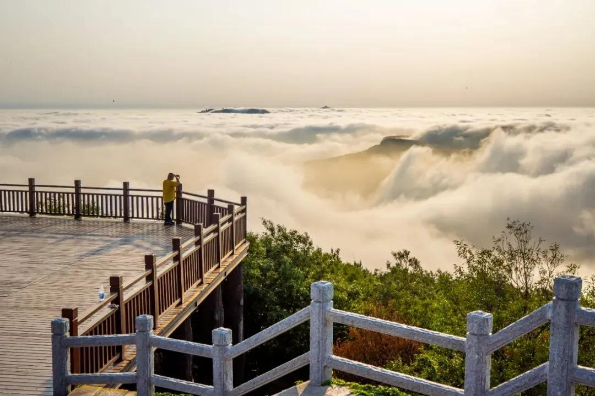
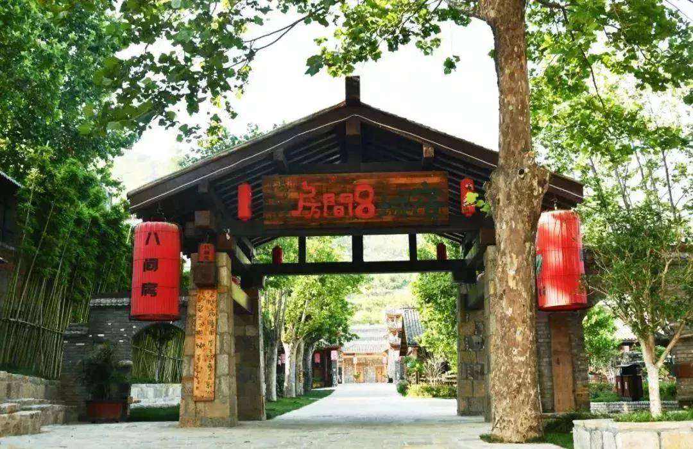
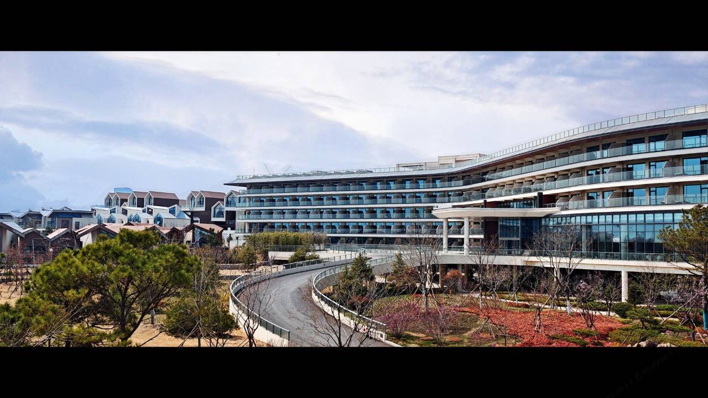
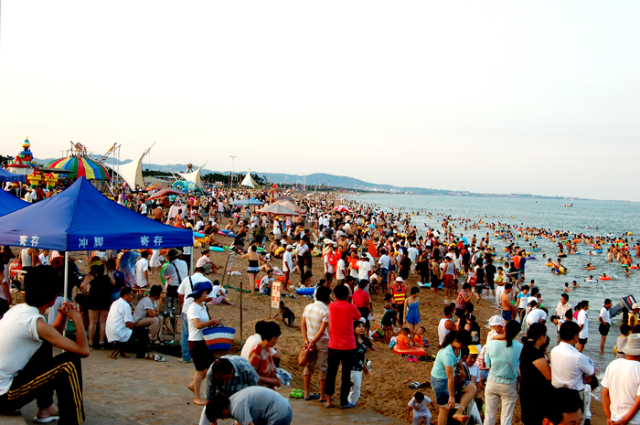

杭州 → 青岛
3天2晚 · 山海自驾
海上云台山住一晚，日照万平口住一晚。看山、看海、玩水，然后去青岛和朋友汇合。
真实地图路线
真实地图底图叠加杭州 → 海上云台山 → 日照万平口 → 青岛路线。
DAY 01
杭州 → 海上云台山·宿城
07:30
杭州出发
10:00
高速服务区休息
12:30
服务区午餐
下午
抵达宿城，办理入住
傍晚
宿城散步、院落休息、晚餐


海上云台山 / 宿城八间房
DAY 02
海上云台山 → 日照万平口
07:30
早餐
08:30
海上云台山 · 海天一览 · 山海视野
11:30
返回宿城，取行李、午餐
13:00
出发前往日照
15:00+
日照开元森泊办理入住
下午
万平口沙滩 / 幻想岛 / 室内水乐园


日照开元森泊 / 万平口海岸
DAY 03
万平口 → 青岛
早上
自然醒，酒店早餐
上午
万平口玩沙、海边散步
退房前
回房冲洗、换衣、收行李
中午
日照海鲜午餐
午后
前往青岛，与朋友汇合
两晚住宿
宿城八间房
海上云台山独院家庭房约60㎡ · 2米大床 + 1.5米床
宿城核心区 · 山林院落
连云港宿城夏庄村夏庄组49号
宿城核心区 · 山林院落
连云港宿城夏庄村夏庄组49号
日照开元森泊度假乐园
万平口亲子水乐园家庭房 / 亲子房型
万平口海滨风景区
幻想岛 · 室内水乐园 · 儿童项目
万平口海滨风景区
幻想岛 · 室内水乐园 · 儿童项目
一路怎么玩
海上云台山
登高看黄海、港口和岛屿。天气合适可遇云海。
开元森泊
幻想岛、室内水乐园和亲子项目。
万平口
沙滩、玩沙、散步。
杭州 → 海上云台山 → 日照万平口 → 青岛